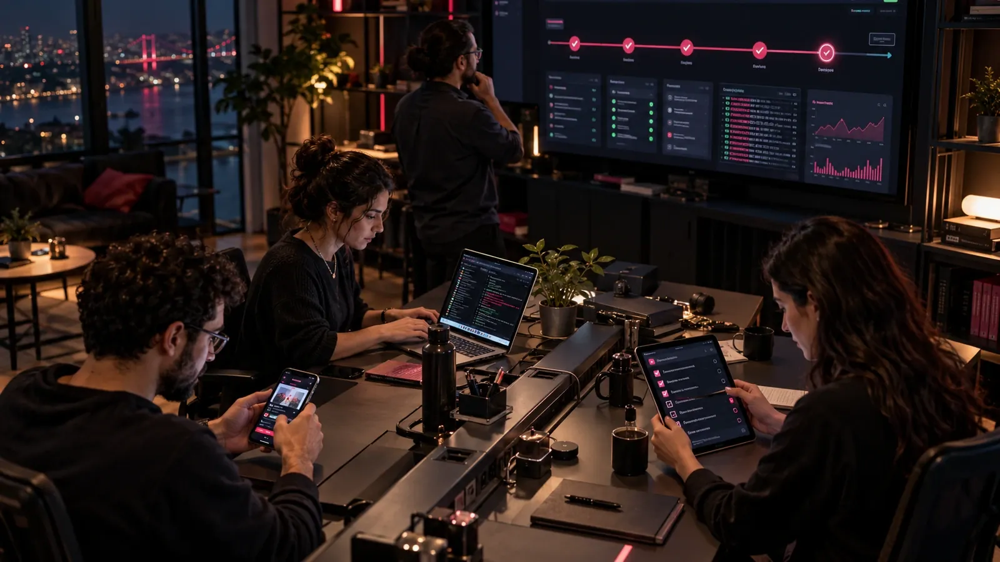
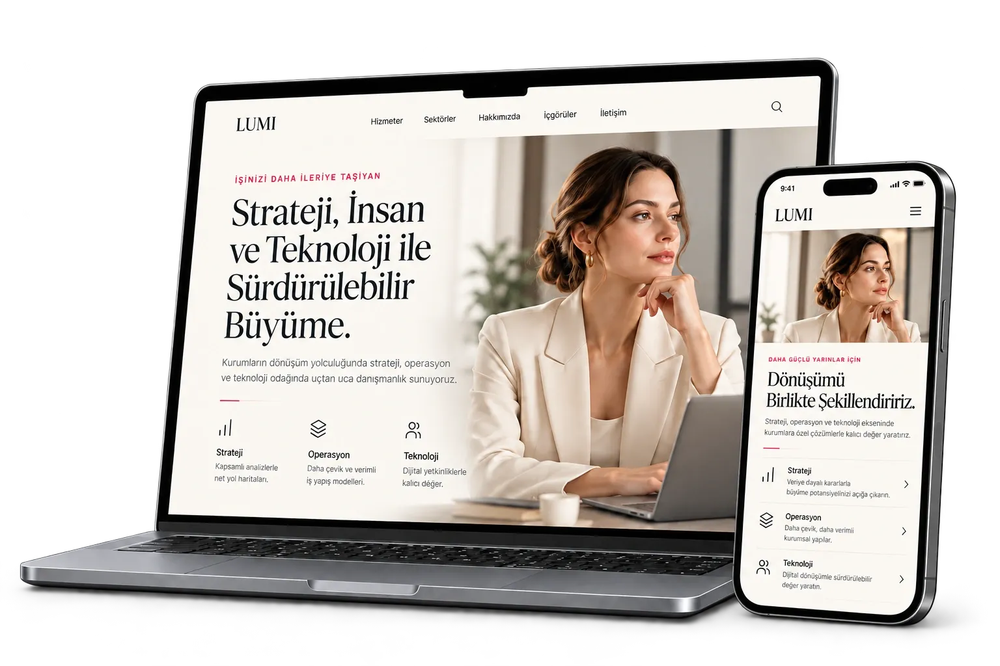
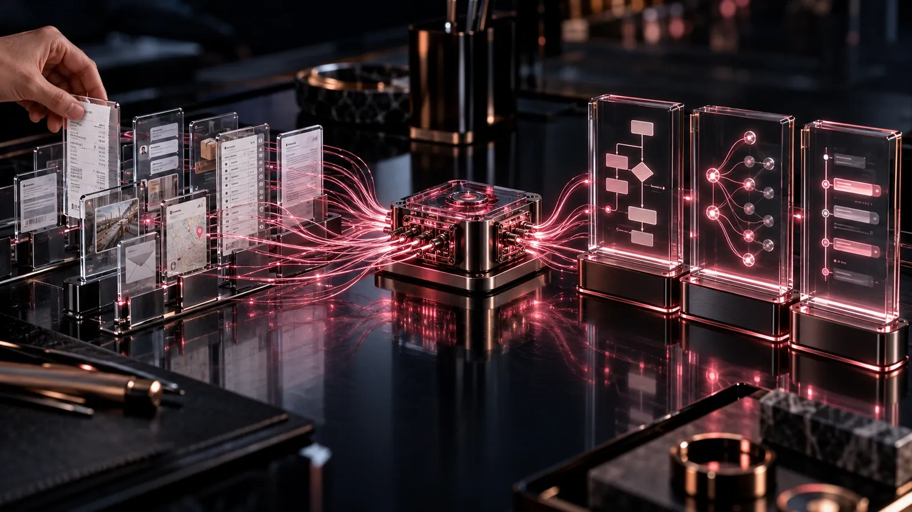
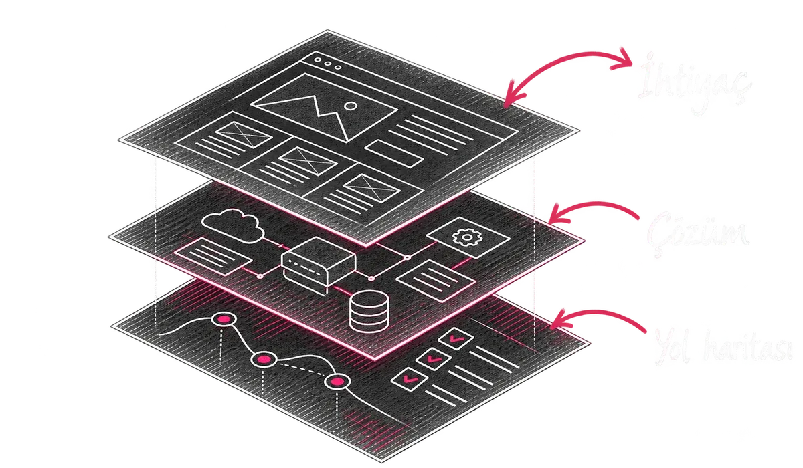
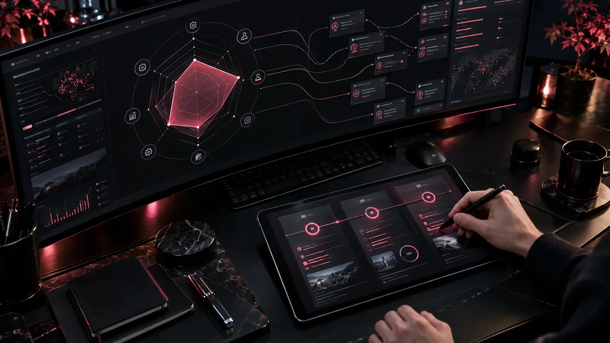
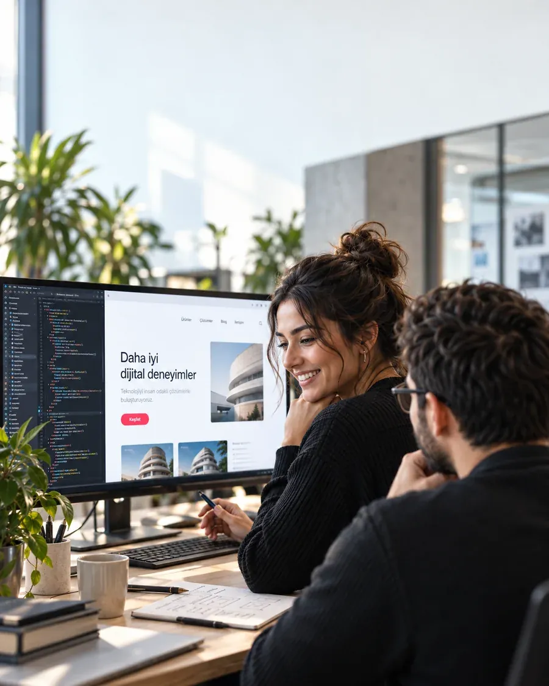

01 / 04
PAZARYERİ / ERP / FATURA
Pazaryeri ve ERP bağlantısı
Trendyol, Hepsiburada, N11, fatura ve sipariş sistemleri tek panele bağlanır.
- Çift yönlü stok ve fiyat
- Sipariş tek listede
- Fatura otomatik
Her kanal, tek kayıt.
İnceleyin →// web sitesi · e-ticaret · randevu · iş takibi
Kaydı işe, işi kazanca çeviriyoruz.
Sektörünüze uygun hazır temayı seçin, ürünlerinizi girin. Sipariş, randevu, kasa ve personel aynı panelde.
7 gün ücretsiz · kart bilgisi istenmez

site.kur();siparis.al();is.takip();rapor.al();Tek panel

01 · site
Müşteri sitenizden sipariş verir ya da randevu alır; kayıt doğrudan panele düşer.
02 · panel
Panel mesleğinizin diliyle açılır: kuaförde uzman ve randevu, serviste usta ve servis kaydı.
03 · kasa
Tahsilat işin kaydına bağlanır; gün sonunda kasa, cari ve rapor hazırdır.
Modüller
Her modül aynı veriye bakar. Siteden gelen sipariş stoktan düşer, randevunun tahsilatı kasaya işlenir.
01 / 05
TEMA / EDİTÖR / ALAN ADI
Sektörünüze göre hazır gelen temayı seçin; metni, görseli ve bölümleri panelden değiştirin.
Siteniz, sizin elinizde.
Ayrıntılara bakın →ÜRÜN / SİPARİŞ / PAZARYERİ
Sitenizden, pazaryerinden ya da tezgâhtan gelen sipariş aynı listeye düşer, stok tek yerden düşer.
Her kanal, tek stok.
Ayrıntılara bakın →TAKVİM / GÖREV / SMS
Siteden gelen randevu onayınıza düşer; geldi, işlemde, tamamlandı adımları tek dokunuşla ilerler.
Boş saat kalmasın.
Ayrıntılara bakın →TAHSİLAT / CARİ / GÜN SONU
Nakit, kart, havale ayrımı; gider, cari ve gün sonu kapanışı. Tahsilat işin kaydına bağlanır.
Kuruşu kuruşuna.
Ayrıntılara bakın →RAPOR / YETKİ / PRİM
17 hazır rapor; ciro, personel, doluluk, stok ve kasa özeti. Ekip, yetki ve prim aynı yerde.
Karar, veriyle verilir.
Ayrıntılara bakın →Çözümler
Bağlantılar, görünürlük, otomasyon ve özel geliştirme. İhtiyacınız büyüdükçe panel de sizinle büyür.
PAZARYERİ / ERP / FATURA
Trendyol, Hepsiburada, N11, fatura ve sipariş sistemleri tek panele bağlanır.
Her kanal, tek kayıt.
İnceleyin →SEO / HIZ / GOOGLE
Hızlı açılan, arama motoruna uygun siteler. Ürün ve hizmet sayfaları kendiliğinden düzenli.
Aranınca bulunun.
İnceleyin →SMS / BELGE / AKIŞ
Randevu hatırlatması, servis fişi, belge akışı ve müşteri mesajları kendiliğinden yürür.
İş kendi kendine ilerler.
İnceleyin →API / PANEL / ÖZEL
Kendi yazılımınızla konuşan API; ihtiyaca göre ek modül ve özel ekranlar.
İhtiyacınıza göre.
İnceleyin →Hazır temalar
Bilgisayarda ve telefonda aynı özen. Yazıyı, yazı tipini ve resmi panelden kendiniz değiştirirsiniz.

Nasıl işler kayıttan rapora ↘
Müşteriniz sitenizden sipariş verdiği an stok düşer, kargo hazırlanır, tahsilat kasaya işlenir. Ayrı programlar arasında kopyala-yapıştır yok.

Nasıl başlıyoruz
Sektörünüzü, iş akışınızı ve kanallarınızı konuşuruz.
Tema, modül ve bağlantıları sizin işinize göre açarız.
Kurulum, veri aktarımı ve eğitim adım adım ilerler.


Bağlantı ve güven
Pazaryerleri, ödeme ve kargo hazır gelir. Her firmanın verisi kendi veritabanında ayrı durur.

Trendyol, Hepsiburada ve N11 siparişleri aynı listeye düşer, stok tek havuzdan yönetilir.
Entegrasyonlar →Ürün, fiyat ve stoğunuzu kendi yazılımınızdan okuyup güncelleyin. Sipariş ve müşteri verisi API’de yoktur.
API sayfası →SSL, rol bazlı yetki ve hazır KVKK metinleri. Her personel yalnız kendi ekranını görür.
Veri güvenliği →Evet. Demo hesabını 7 gün ücretsiz deneyebilirsiniz. Deneme bitince bir paket seçersiniz; seçmezseniz hesabınız silinmez, yalnız işlem yapılması durur.
Evet. Temayı panelden istediğiniz zaman değiştirebilirsiniz; metinleriniz, ürünleriniz ve sayfa içerikleriniz yeni temaya taşınır.
Evet. Alan adınızı panelden bağlarsınız; DNS adımlarını panel adım adım gösterir.
Hayır. Her firmanın verisi kendi veritabanında ayrı tutulur; başka bir firma sizin kayıtlarınızı göremez.
Bizimle iletişime geçin. Listede olmayan bir iş kolu için paneldeki terimleri ve ekranları sizinle birlikte uyarlarız.
Başlayın
“bugün kurun, yarın satışa başlayın”
Numaranızı bırakın, sizi arayalım. İsterseniz demo hesabını şimdi açın.